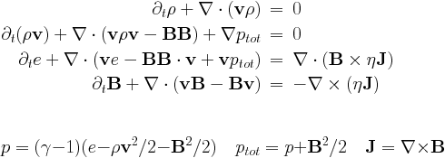
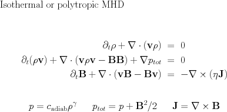

List of physics modules
This document describes the equations implemented. Information about user defined source terms are in user module. In principle, the code handles anything of generic form

The code is configured to use the specified set of equations by activating it in the usr_init subroutine of user module "mod_usr.t"
subroutine usr_init() ... call EQUATION_activate() end subroutine usr_init
where EQUATION is one of the implemented physics modules (rho,hd,mhd), see below.
Transport Equation: rho
call rho_activate()

The transport equation describes the transport of a scalar field, here the density rho by a prescribed velocity field. This equation is used for test purposes.
The parameters rho_v in the rho_list of amrvac.par file define the components of the uniform velocity field.
For a linear scalar equation the Riemann solver is trivial, thus all TVD type methods give identical results.
Scalar Nonlinear Equation: nonlinear
call nonlinear_activate()
This module contains various instances of a scalar nonlinear equation, including the inviscid Burgers, inviscid nonconvex equation, as well as a possibility to handle the Korteweg-de Vries equation. It allows testing of truly nonlinear (shock steepening and formation) phenomena, in 1D to multi-D, or to test how source additions are best combined with flux prescriptions and discretizations. The equation implemented in \(N_d\) dimensions is
\f$ \frac{\partial \rho}{\partial t} + \nabla \cdot \mathbf{F}(\rho,\mathbf{x},t) = -\delta^2 \sum_{i=1}^{N_d} \frac{\partial^3 \rho}{\partial x_i^3} \f$
where the RHS is activated through the mod_kdv.t module. The actual flux expression can be chosen (depending on the parameter nonlinear_flux_type) to be one of \( \mathbf{F}^{\mathrm{burgers}} = \frac{1}{2}{\rho^2}\mathbf{v}_0 \) or \( \mathbf{F}^{\mathrm{nonconvex}} = {\rho^3}\mathbf{v}_0 \) where we introduced \(\mathbf{v}_0=\sum_{i=1}^{N_d} \hat{\mathbf{e}}_i\)
Hydrodynamics: hd
call hd_activate()

The Euler equations are solved for density rho, the momentum density m=rho*v and the total energy density e. The pressure is a derived quantity which is calculated from the conservative variables.
Parameters of hydrodynamics are read in the hd_list of parameter file. There is a single equation parameter, the adiabatic index hd_gamma (typical value is 5/3).
This equation module can be combined with physical sources for (local) optically thin radiative losses by set hd_radiative_cooling=.true.. see the radiative cooling page. Schematically, it introduces terms as
The HD module can also be combined with the external gravity module (src/physics/mod_gravity.t) for uniform gravity by set hd_gravity=.true.
and for point gravity
Note how the gravitational constant and the non-dimensionalization is taken into the parameters M_point and its location x_point.
To do adiabatic hydrodynamics (i.e. solve the hydro set without energy equation added) just add in hd_list of parameter file
hd_energy=.false.
This special case includes the equations for pressureless dust and the Shallow Water equations, and writes generally as

The system of adiabatic hydrodynamical equations are solved for the density rho and the momentum density m=rho*v. The pressure is a function of density only since an isentropic initial condition is assumed. There are two equation parameters, the adiabatic index hd_gamma (the isothermal case corresponds to hd_gamma) and the adiabatic constant hd_adiab (which should be positive or zero). It is possible to set hd_adiab=0 and handle the case of pressureless dust.
The system of shallow water equations is a special case with the following identifications: rho=h represents the height of the water column, hd_gamma2 and the adiabatic coefficient is half of the gravitational acceleration hd_adiab=g/2.
There is a Roe-type Riemann solver implemented, in hd/mod_hd_roe.t. Several routines specific to HLLC are in hd/mod_hd_hllc.t.
Magnetohydrodynamics: mhd
call mhd_activate()

This is the full system of the MHD equations, with the following conservative variables: density rho, momentum density m=rho*v, total energy density e and the magnetic field B. The magnetic field is measured in units for which the magnetic permeability is 1.
Parameters of magnetohydrodynamics are read in the mhd_list of parameter file. The source terms on the right hand side with eta in them are the resistive terms.
There are three equation parameters: the polytropic index mhd_gamma (which must be larger or equal to 1), and the resistivity mhd_eta, and the entropy mhd_adiab. Ideal MHD corresponds to mhd_eta=0, positive values give a uniform resistivity, while a negative value calls the specialeta procedure to determine the resistivity as a function of the coordinates, of the conservative variables, and/or of the current density. This subroutine is to be completed by the user.
There is a Roe-type Riemann solver implemented using arithmetic averaging, in mhd/mod_mhd_roe.t, while several routines specific to HLLC are in mhd/mod_mhd_hllc.t.
This equation module can be combined with physical sources for (local) optically thin radiative losses by set mhd_radiative_cooling=.true.. It can also be combined with the external gravity modules by set mhd_gravity=.true..
We also have implemented the magnetic field splitting strategy, where a static, background magnetic field is assumed. This modifies the equations and brings in extra sources and flux terms.
To run isothermal magnetohydrodynamics, add in mhd_list of parameter file
mhd_energy=.false.

This is the system of the MHD equations without the full energy equation, and with the following conservative variables: density rho, momentum density m=rho*v, and the magnetic field B. The magnetic field is measured in units for which the magnetic permeability is 1. The density pressure relation is polytropic.
Divergence B source treatments
Both the classical and the special relativistic MHD module can deal with solenoidal magnetic field corrections through source term treatments. Traditionally, these can be written as
Terms proportional to div B are Powell`s fix for the numerical problems related to the divergence of the magnetic field. They are used only in more than 1D. We can also just take the term along in the induction equation, known as Janhunens approach. Another option is to use the diffusive (parabolic) approach, with the parameter _C_d_ of order unity (up to 2). Alternatively, there is the [Dedners](methods.md) generalised Lagrange multiplier (GLM) method.
Positivity fixes
Another, similarly corrective, action is referred to as positivity fixing. This is merely an additional means to handle the supposedly rare instances where due to all nonlinearities of the scheme employed, the local conservative to primitive transformation signals a non-physical state. Our positivity fix approach can then be activated, and one such strategy operates as follows: identify all cells (within the same grid block) that represent physical states surrounding a faulty cell in a rectangular zone up to small_values_daverage cells away; (2) convert those cells to primitive variables; and (3) for all but the magnetic field components, replace the faulty cell values by the average of surrounding physical state cells. Finally, revert to conservative variables where needed. Obviously, in this form, strict conservation may be violated. These fix strategies are seperated off in the mod_small_values modules. They are by default inactive, and can be controlled by the parameters small_values_method and other related parameters described in par/PROBLEM.